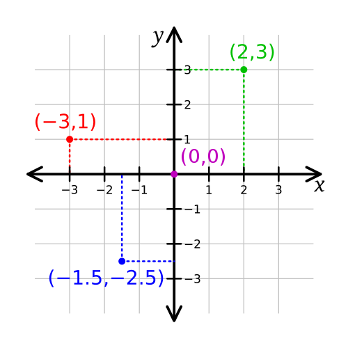
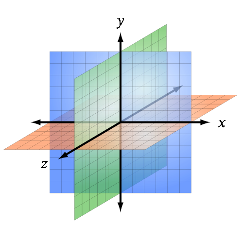
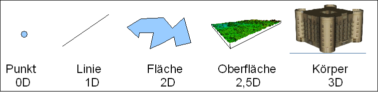
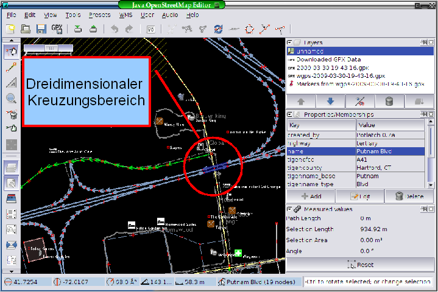

Raum im GIS
Wir haben bislang ständig und ohne besondere Vorüberlegungen mit den Begriffen Raum und Zeit gearbeitet. Betrachtet man die in der vorausgegangenen Lektion entwickelten Raumkonzepte etwas genauer, wird deutlich, dass der Begriff Raum definiert werden muss, um ihn für GI-Systeme nutzbar zu machen. Der Raum in GI-Systemen wird, in Anlehnung an die Mathematik und Physik, als dreidimensionaler euklidischer Raum verstanden. Aus dem Mathematikunterricht kennen wir die euklidische Ebene (mit 2 Dimensionen, vgl. Abb. 13) und den euklidischen Raum (mit 3 Dimensionen, vgl. abb. 14). Am einfachsten kann der euklidische Raum mit Hilfe eines kartesischen Koordinatensystems als Bezugssystem, in dem die Koordinaten entlang senkrecht aufeinander stehender Achsen gemessen werden, beschrieben werden.

Abbildung 13: Ausschnitt aus einem zweidimensionalen kartesischen Koordinatensystem mit 3 eingetragenen Punkten in Koordinatenschreibweise. (Bolino 2008)
Abbildung 14: Allgemeine Abbildung eines dreidimensionales kartesischen Koordinatensystem mit euklidischen Ebenen durch den Ursprungspunkt. (Sakurambo 2007)Die Raumrichtungen
Bislang haben wir von Geoobjekten als definierten Objekten mit eindeutiger Position (Koordinaten) gesprochen. Mit Hilfe der Koordinate (x- und y-Wert) kann im zweidimensionalen Raum die Position eines Punktes eindeutig festgelegt werden. Da Objekte aber auch eine dreidimensionale Ausprägung haben können, ist es sinnvoll auch die Raumdimension zu berücksichtigen. Erst mit Hilfe ihrer dreidimensionalen Koordinaten können Geoobjekte räumlich exakt beschrieben und abgebildet werden. Als Dimension eines Geoobjektes werden die voneinander unabhängigen Raumrichtungen bezeichnet. Diese korrespondieren mit den geometrischen Eigenschaften von Punkten Strecken und Flächen und Körpern in einem Kartesischen Koordinatensystem: 0D Geoobjekte: Punkte (Orte); keine Länge und Fläche (z.B. Messstation, Bohrpunkt) 1D Geoobjekte: Strecken; definiert durch eine (endliche) Länge aber keine Fläche (Gewässerlängsprofil, vertikales Bodenprofil) 2D Geoobjekte: Flächen; definieren einen geschlossenen Linienzug (Einzugsgebiet, Stadtgebiet) 3D Geoobjekte: Körper; werden z.B. als Solide (Volumen-Körper) oder Polyeder (Grenzflächen-Körper) definiert (Grundwasserkörper,Atmosphäre) Die Merkmale (Attribute) eines Geoobjektes werden als thematische Dimension bezeichnet (nD) Die zeitliche Veränderung von Geoobjekten oder Teilsystemen wird in der Regel 4.Dimension genannt (Abb. 15).

Abbildung 15: Dimensionalität von Geoobjekten. Verändert nach (Bartelme 2005)Die Lage im Raum
Wir benötigen für die vollständige und korrekte Repräsentation neben dem Ort (Geometrie), den Raumrichtungen (Dimensionen) auch noch die (relative) Lage (Topologie) der Objekte zueinander. Die Lage von Punkten zueinander ist zunächst schlicht. Wir können die geometrische Situation nutzen, um Sie zu berechnen. Schwieriger ist es wenn diese Punkte exakt die gleichen Raumkoordinaten aufweisen und sich nur in der Höhenangabe (Dimensionalität) unterscheiden, wie etwa in einem Gebäudeplan die Ausgänge eines Aufzugs oder wenn es nicht auf die exakte Lage zueinander ankommt, sondern auf Information was ist benachbart (vgl. Abb. 16).
 Abbildung 16: Tagesliniennetzplan der Stadtwerke Marburg. Nur die wenigsten Menschen würden einen Netzfahrplan nutzen, um
etwa eine Stadtbesichtigung zu Fuß zu planen oder aber die geometrisch exakte Lage der Haltestellen zueinander zu ermitteln (Stadwerke Marburg 2008)
Abbildung 16: Tagesliniennetzplan der Stadtwerke Marburg. Nur die wenigsten Menschen würden einen Netzfahrplan nutzen, um
etwa eine Stadtbesichtigung zu Fuß zu planen oder aber die geometrisch exakte Lage der Haltestellen zueinander zu ermitteln (Stadwerke Marburg 2008)Geometrie, Dimensionen und Topologie - eine Synthese im GIS
In vielen, ja den meisten Situationen ist jedoch die korrekte Verknüpfung von Geometrie, Topologie und Dimension unerlässlich. Verbindet man unterschiedliche Geoobjekte zu komplexen Einheiten kann es zu Überschneidungen, Lücken oder anderen irregulären räumlichen Zuständen der Repräsentation der Wirklichkeit kommen. Bei Karten kennen wir dieses Problem nicht, da die bildhafte Wiedergabe der repräsentierten Welt zwangsweise zweidimensional ist und kartographische Symbolik zur Darstellung dieses Mangels verfügbar ist (z.B. Schraffen für Dimensionen). Im GIS bilden wir die Welt hingegen multidimensional ab. So können sich zum Beispiel zwei Streckenabschnitte, die durch jeweils zwei Koordinaten bestimmt sind, kreuzen. Sind dies eine Bundesstraße und eine Autobahn, findet diese Kreuzung mit einer Brücke ohne Verbindung statt. Hier kommt es auf eine exakte Geometrie, Topologie und Dimension an. Wird eins dieser Gebote verletzt, verlangt das Navigationsgerät vielleicht die direkte Auffahrt auf die Autobahn, weil es die Brücke für eine Kreuzung hält oder leitet gegen die Fahrtrichtung auf die Bundesstraße...(Abb. 17)

Abbildung 17: Screenshot einer JOSM einem Openstreetmap Editor bearbeiteten Straßenkarte. Von Interesse ist der Krezungsbereich der obwohl zweidimensional dargestellt, dreidimensional modelliert wird. (Scholz 2009)Eine geeignete räumliche und zeitliche Beschreibung von Geoobjekten und ihrer Eigenschaften macht es also erforderlich, neben der Geometrie auch die Topologie und Dimension des Objektes bzw. des räumlichen Kontinuums zu kennen und adäquat abzubilden.
Besuchen Sie die folgenden Webseiten. Analysieren Sie vor dem Hintergrund Ihres neu erworbenen Wissens folgendes:
- Was wird repräsentiert? Geoobjekte oder Raumkontinua?
- Welche Dimension und Geometrie liegt der Repräsentation ihrer Meinung nach zugrunde?
Bearbeiten Sie...
Versuchen Sie einige weitere alltägliche Beispiele für die Bedeutung von Lage und Dimensionalität zu finden. Überlegen Sie sich unterschiedliche Konzepte wie die Höhe eines bestimmten Raumausschnitts repräsentiert werden kann.